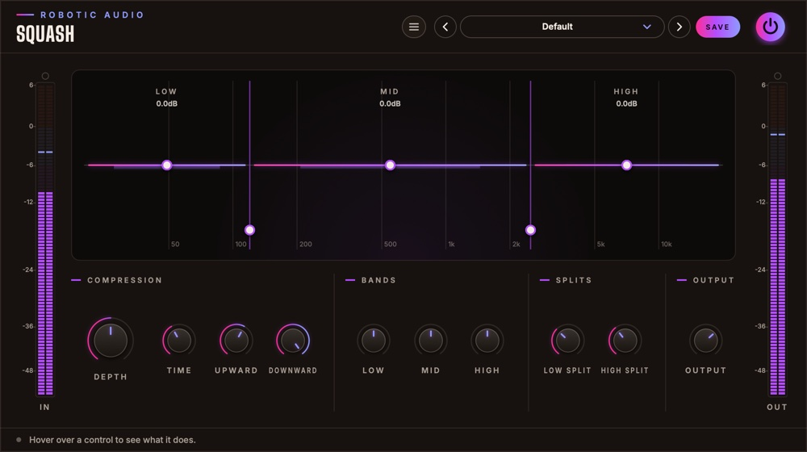

Squash
Three-band upward and downward compression in one small, free plugin. Loud parts are pushed down, quiet detail is pulled up, in the lows, the mids and the highs separately: the thick, bright, in-your-face sound of OTT-style processing, with one knob to say how much.
- 3 bands
- Upward + downward
- Drag bands and splits
- 10 controls
- Free
- AU · VST3 · Standalone

Quick start
Put it on, set the depth, listen.
Insert it
On a synth, a drum bus or a whole mix. The default settings already squash at half depth.
Set the depth
Turn Depth up for more, down for less. 20–40 % is plenty on a whole mix; synths and drums take more.
Balance the bands
Drag a band's line up or down in the display, or turn Low, Mid and High, to tilt the sound.
Match the level
Bring Output down until OUT reads about what IN does, then compare with the power button.
The window
One display, ten knobs, two meters.
- Header
- The preset bar (previous, next, the list, SAVE), the power button (bypass) and the menu (three lines) with this manual. Click the logo for the version and credits.
- IN and OUT meters
- The level going in and coming out, with clip lamps on top.
- Display
- The three bands across the spectrum. See The display.
- Controls
- In four groups: Compression, Bands, Splits and Output. See Controls.
- Tooltip strip
- Along the bottom: what the control under the mouse does.
Signal flow
Split, squeeze and lift each band, add them up.
The input is split into Low, Mid and High by steep (Linkwitz-Riley) crossovers at the two splits. Each band follows its own level (stereo-linked) and is pushed down when it's loud and pulled up when it's quiet, then set to its band level. The bands are added back together and Output sets the level.
Squash has no latency, and while silence comes in it rests and costs nothing.
The display
What every band is doing, right now.
- Bands
- LOW, MID and HIGH, each over its part of the spectrum (20 Hz to 20 kHz, logarithmic), divided where the splits are.
- Columns
- A glowing column from the middle line: up while the band is being pulled up, down while it's being pushed down, and how far.
- Band lines
- Each band's level afterwards (Low, Mid, High), with its value under the band's name. Drag a line up or down.
- Split handles
- At the bottom of the lines between the bands. Drag one sideways to move a split.
Controls
Compression, Bands, Splits and Output.
Compression
- Depth
- How hard every band is pushed, down and up. At 0 the sound is untouched; the output rises a little with depth (up to 5 dB) to keep the level even. 0 … 100 %
- Time
- How fast the compression reacts and lets go: short is grabby and crunchy, long smooth and breathing. 0 … 100 %
- Upward
- How much quiet detail is pulled up: tails, room sound, breaths. 0 … 100 %
- Downward
- How much loud parts are pushed down. 0 … 100 %
Bands
- Low, Mid, High
- Each band's level after the compression: tilt the sound by turning a band up or down. −24 … +24 dB
Splits
- Low Split
- Where the low band ends. 40 Hz … 1 kHz
- High Split
- Where the high band starts (kept at least half an octave above Low Split). 1 … 12 kHz
Output
- Output
- The level after everything. −24 … +12 dB
Presets
Your own settings, kept.
Squash starts at Default. Press SAVE in the header to keep your own settings; the preset menu has Save As, Delete and Open Folder. An asterisk after the preset's name means you've changed something since loading it. Every knob is a host parameter and can be automated.
Recipes
Settings to start from.
Depth 15–25 %, Time 60 %. Detail comes forward without hearing it work.
Depth 100 %, Time 20 %, Output −6 dB. Lower High if it fizzes.
Downward 0 %: only quiet things come up, the peaks stay as they were.
Upward 0 %: a three-band compressor that only pushes down.
Want to see the spectrum under the bands, move the thresholds and drive it harder? That's Overkill, Squash's bigger sibling.
Specifications
The numbers.
| Property | Value |
|---|---|
| Bands | 3, split by Linkwitz-Riley crossovers |
| Detection | Peak, stereo-linked, per band |
| Downward | Above −20 dB, up to 10:1 |
| Upward | Below −38 dB, up to 24 dB; nothing below −75 dB is lifted |
| Latency | None |
| CPU | Rests while silence comes in |
| Channels | Stereo (mono tracks work too) |
| Formats | AU, VST3, Standalone |